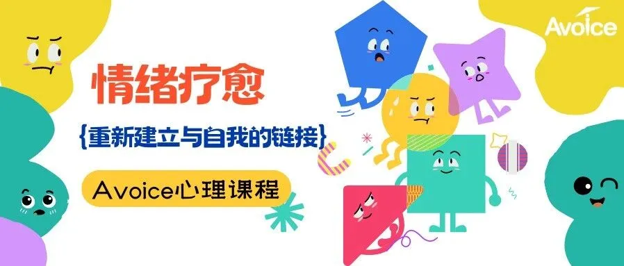
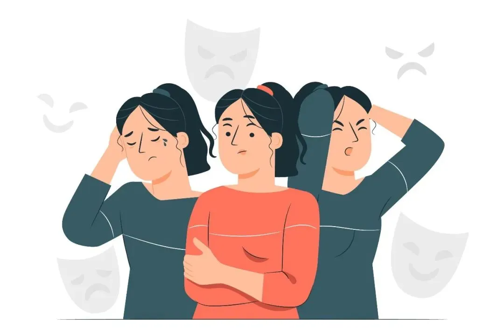
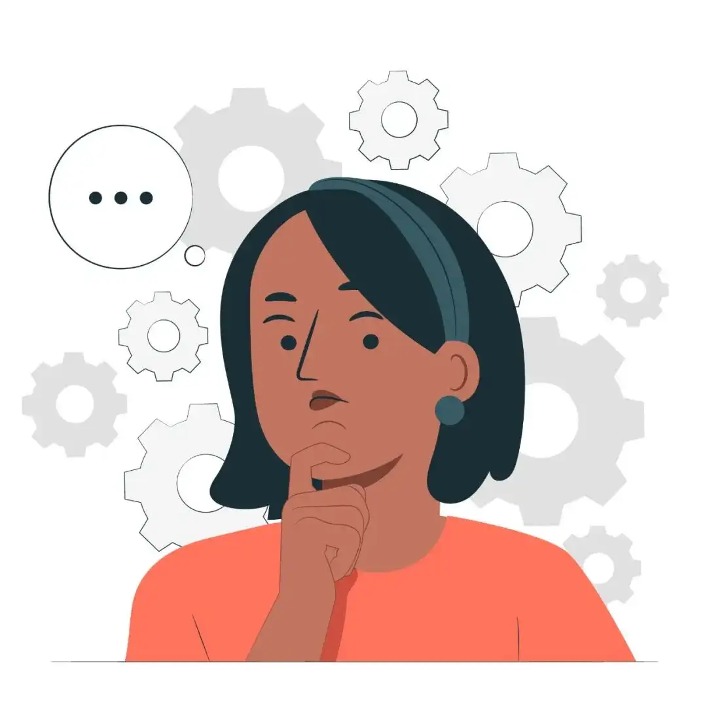
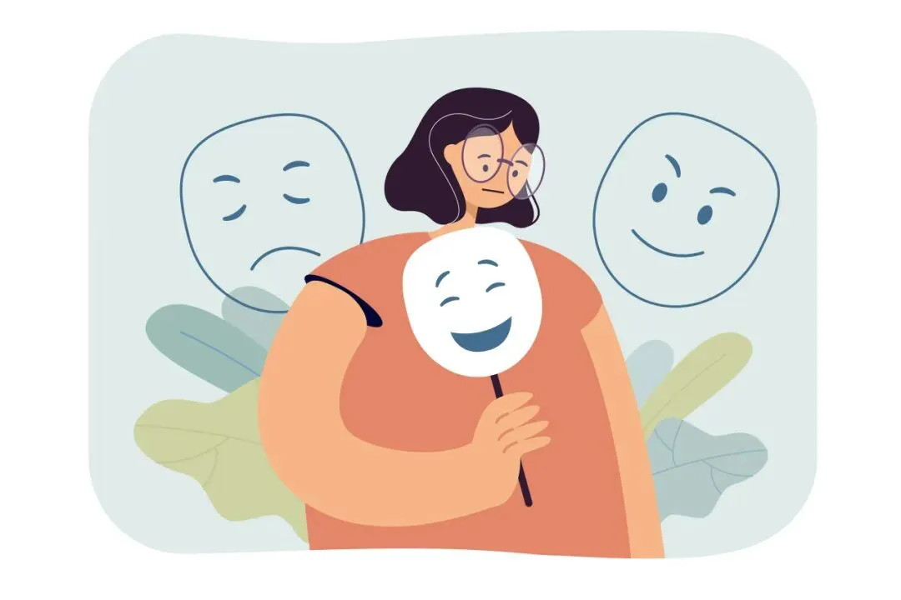
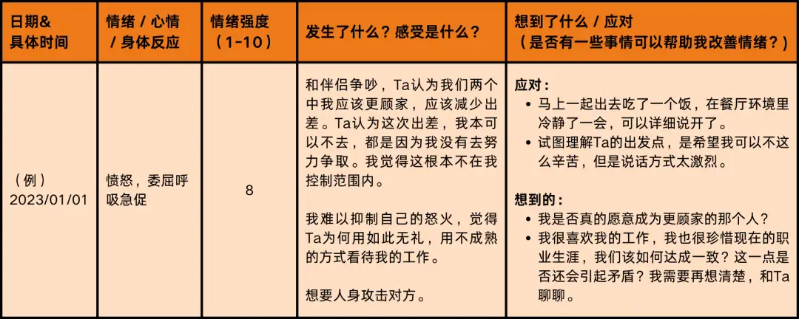
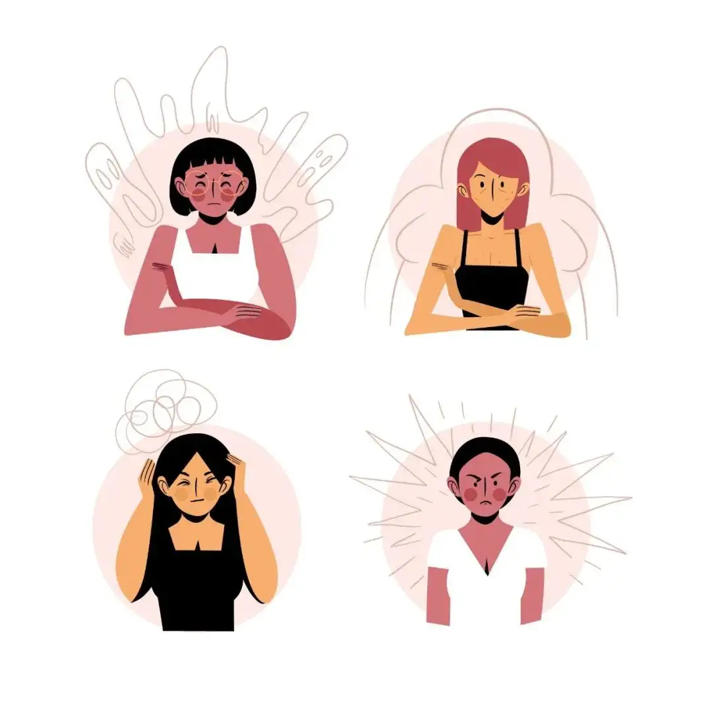
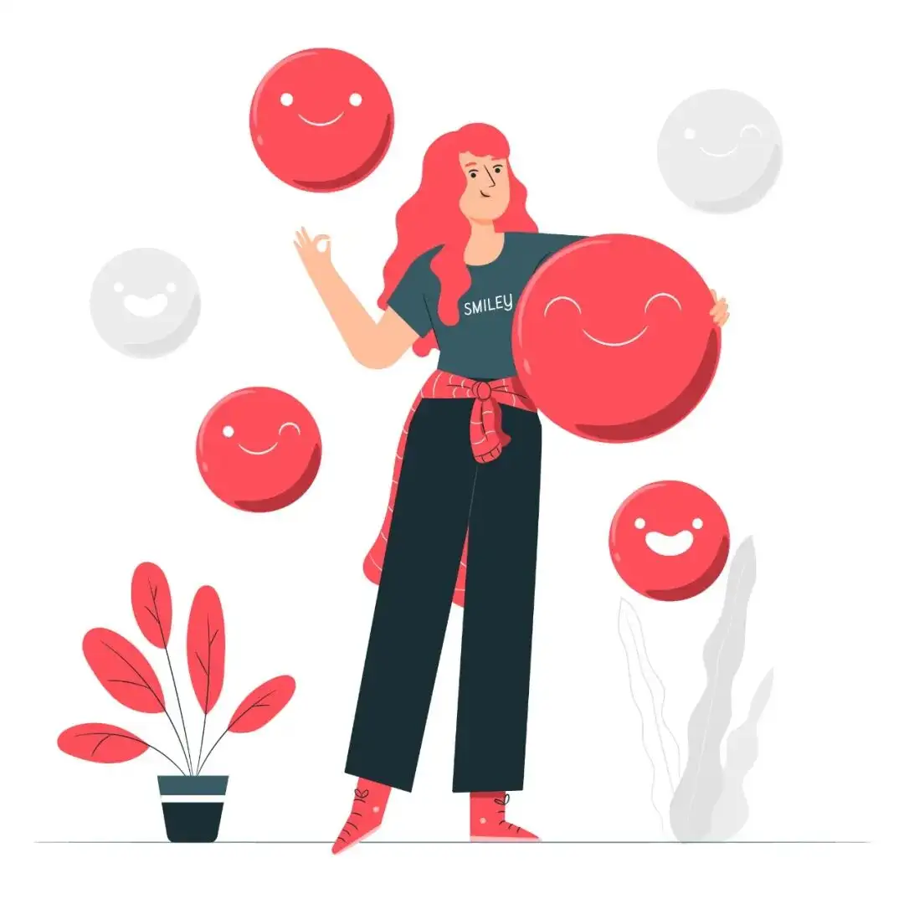

Avoice系列心理课程简介：
Avoice的自我疗愈系列课程为遭受过关系暴力的幸存者而制作，目标是帮助幸存者理解自身的反应和困惑，积极发现内在和外在资源。通过课程我们想传达以下内容：
• 这不是你的错
• 无论你有何种感受和反应，都是正常的
• 你不是一个人，你能够获得支持
• 你的经历值得被理解，也值得被讲述。
上一节课，我们介绍了什么是创伤以及如何看待创伤。当经历了这些让我们心痛的时刻，我们可能感到自我以及周围世界相关的一切都失去了色彩。这节课，我们将与你一起走上疗愈的旅程。当遭遇创伤，你可能产生一系列的身体反应和情绪感受，你可能感到悲伤、愤怒，甚至感到失去了对身体和思维的掌控；为了保护自己，你关上了心门或开启警惕状态，确保伤害不会再影响你；你可能也出现过抑郁或者焦虑的症状。
现在，我们希望和你一起探索一些更加温和的疗愈方式，帮你放下警惕，回归平静。疗愈创伤的关键是通过重新建立与自我的链接——与自己的情绪、身体以及思维建立新的联系，从而获得掌控感，并且重新体验到安全感。关注、认识、了解情绪，帮助你与情绪更好地相处，是本节课程的主题。
本节课程大约20分钟，你会了解到：
• 情绪的重要性
• 在当下觉察情绪
• 如何接纳情绪
• 认知和理解情绪
在课程的最后，我们将为大家带来一个通过放松身体来放松情绪的小练习，希望能够帮助大家更好地理解到如何通过与身体、情绪建立链接的方式来进行自我疗愈。
让我们先从「情绪的重要性」谈起：
生活中，负责处理决定，进行逻辑思考的大脑其实只占整个大脑体积的30%，而负责基本生存和情绪的大脑却占据更多的位置，负责情绪的脑区会从出生就开始不断生长，可以说，在发展出所谓的“理性”之前，情绪是我们维持生存，应对复杂挑战的重要指向标。当婴儿看到照顾者的微笑时，Ta感到温暖，愉快，这些情绪说明Ta现在所在的环境是安全的。情绪反应了人类对外界事件和事物的体验，它既是一种反应，也是一种手段，它帮助我们感受，行动，它告诉我们一些关于我们此时此刻状态的信息，同时也影响我们做出选择。

遭遇创伤时，我们产生的种种情绪感受也在提醒我们，我们经历了糟糕的时刻，我们希望能够保护自己。因此，增加对情绪的了解与链接，对我们了解真实自我，有着至关重要的作用。接下来，我们将会从觉察情绪，接纳情绪和认知情绪这三个阶段来谈如何通过与情绪的链接，疗愈自我。
「第一阶段：觉察情绪」
在事件发生的当下了解并觉察到自己正在产生什么情绪，这是情绪智力的核心能力，也是自我理解的基础。
简单评估自己的「情绪觉察」水平，你可以试试下面的这个问题。
想象一下当你和伴侣争吵，对方全程都指责说这完全是你的责任，你会有什么样的反应？最贴近以下的哪种情况？
1. 描述不了自己的情绪体验，或只能描述自己的躯体感觉，比如：心里憋了一口气、头疼
2. 只能描述自己的情绪倾向或者状态，难以用情绪词汇来表示，比如：我感觉还行/很不好
3. 能描述单一的、刻板的情绪体验，比如：我很难过
4. 能描述更加复杂的、连贯的情绪体验，甚至能体验到彼此对立，或明显不同的情绪感受，比如：我很悲伤，但也还能感觉到有希望
5. 能同时体会到自己和对方的情感复杂性，能区分情绪间的细微差异，能较准确地描述完整的情绪感受。
你的情绪觉察水平在哪一层呢？

在剧烈的情绪发生的当下，有些人习惯直接跳过情绪感知，急着去分析和解决问题，这种情况称为“情绪脱扣”，情绪的觉察也可以从这里开始。在事件发生后，我们可以在意识层面上停止对情绪做任何归因和处理，而是尝试着更清楚地感知并看到自己的情绪。比如，当我们在亲密关系中遭遇Ta人的中伤时，我们可能感到难过、受伤，我们可能会立刻开始思考对方为什么伤害我，思考这是谁的错，怎样才能避免下次的冲突。
这些思考本身没有错，但无休止地根据经验想办法，试图做进一步的解释，会导致我们偏离情绪本身， 忽视当下的感受。多数时候，引发情绪的事件往往不能立刻被解决，就像被冤枉时，未必能立刻解释清楚；当我们与人发生冲突时，也无法立刻就让双方情绪平息，辩清谁对谁错。忽视情绪本身，可能会让我们在解决问题的过程中，持续被情绪困扰，被无力感淹没，有时甚至导致我们无法解决眼前的问题。例如当我们在为创伤经历感到痛苦时，过早地尝试理解它可能会让我们经历二次创伤，陷入强迫性思维。这个时候，我们要做的是停止对情绪进行归因，停止过度思考，回到最简单的问题上来：“我现在感受如何？”
我们也可以通过觉察身体来更好地理解自己的情绪感受。情绪往往会伴随着一系列肢体、行为和心理的反应。比如害怕时，心跳会加快，出汗或者发抖；紧张时，身体会僵硬，血压上升；难过时，可能胸口发紧，呼吸急促。当我们有意识地去注意身体在不同情况下的反应，就能逐渐学会侦测压力和舒适的征兆。在下次身体有类似感觉时，能更快地分辨自己在经历什么情绪，也就能够与负面情绪拉开距离。我们也可以通过理解和安抚身体感受来达到舒缓情绪的作用，比如在强烈的焦虑中时，深呼吸就是缓解焦虑的好方法。可以首先专注于呼吸，逐渐加深呼吸的幅度，感受呼吸的变化，随着呼吸的放缓，焦虑也逐渐被舒缓。把注意力放在呼吸带来的身体感受上也能让注意力回归当下，避免过度思考引发情绪的蔓延。只有当我们把注意力回归自身，看见情绪，才能进行下一步：接纳情绪。
「第二阶段：接纳情绪」
在有些情况下，我们可能很难做到立刻意识到自己的情绪，特别是当身处紧张，激动的情绪状态时，我们c绪的产生感到自责和懊悔，相反，化解这种感受，只需要先接纳情绪。将接纳具体化，可以简单概括为：说出来，面对它。
【说出来】
可以尝试先对自己用一个万能句式，说出你的情绪：“我感到XX（一种情绪）是正常的”或者是“我有XXX的情绪是正常的”。（例如：我受到伴侣的背叛，我感到愤怒／心痛是正常的）——这是一种通过语言暗示帮助自己主动接纳情绪的方式，我们希望可以做到对负面情绪不批判，不抗拒，不压抑，所以理解所有情绪都是合理的就是它最朴素的方式。

【面对它】
负面情绪从不会在压抑中消失，而是会在压抑后以心理疾病或身体疾病的方式呈现出来。通过回避来管理情绪的应对策略可能会导致抑郁症或焦虑症，而慢性情绪压力也会通过增加身体应激激素影响身体的健康。以下是几种常见的疏解方式——
第一，记录情绪。
我们可以通过写“情绪日记” 来了解情绪发生的来龙去脉。方法就是，通过日记形式记录下是什么样的情景诱发了我们的情绪？情绪的强度如何？我们的身体有什么样的反应？我产生了哪些感受？当你感受到这些的时候，你想到了什么？每一天，我们都可以观察，这一天我的情绪发生了什么样的变化。就像通过第三人视角看自己，观察自己的情绪特点，是不是含有固定模式？是不是有些自己常用的方式可以帮助自己有效调节？
范例：（你也可以根据你的具体记录习惯调整）

第二，命名情绪。
很多时候，我们在情绪袭来的时候，只能先感觉到一种笼统和粗略的情绪。比如，在情绪记录表上的例子中，伴侣指责你还不够顾家，或者没有为争取不出差作出努力时候，你首先会感到“太崩溃了”“气死了我”之类，这种感觉可能是一种笼统的愤怒。然而，人的情绪实际上是具有层次的，复杂而多元的。
在粗略体会这种情绪感受以后，我们可以尝试细化并命名其中的核心情绪。在“我气死了”的深处，除了愤怒，我们还能感觉到对伴侣没有了解这件事情原委，且没有与自己同一战线面对问题的“失望”和“委屈”，对于工作并不是都在自己掌控范围内的“无助”，对万一拒绝出差将危及工作的“焦虑”。在原先笼统的愤怒感受之下，原来掩藏着更细致的情绪，而情绪关联的是自身的需要和对重要Ta人的期待。通过命名情绪理解当下，更好地沟通需求。

对于疏于观察自己情绪的人来说，情绪感知会像分辨率很低的显示器，只能识别到粗略，不精确的情绪，这会阻碍我们进一步“命名情绪”。对于细节情绪的分辨，其实是可以后天学习和练习的。有时候，我们只是很少使用那些表达自己感受的语言，所以我们可以首先尝试丰富自己的情绪词库。比如，情绪词汇中将惭愧定义为：因为自己有缺点或做错了事、未能尽到责任而感到不舒畅；害羞定义为：因胆怯、怕生或做错了事怕人耻笑心中不安，难为情。这些都是我们在经历或回忆起创伤经历时可能会产生的情绪。通过熟悉这些细节情绪的词汇，丰富语言，结合生活中的体验，从而提升情绪感知的精细度，更准确地向Ta人表达感受和需要。
总的来说，在接纳情绪的环节，通过说出来，面对它的方式，了解什么情况会引起你特定的情绪反应，以及自己是怎样被它影响的，也是自我了解的重要部分。
「第三阶段：认知情绪」
通过前面两个阶段，理解到所有的情绪都有其合理性，看见并且接纳是最好的方式。同时，建立情绪稳定还需要第三步：通过情绪认知更好地和情绪共处，从而改变我们看待自己和世界的方式，最终改变自己的感受和行为，把自我疗愈的主动权掌握在自己手里。
情绪稳定是一个人心智成熟的标志之一。情绪稳定的人包含了相对成熟的世界观和稳定的自我认知，加上对自身情绪的熟悉和清晰，因而在面对情绪时能有效调节和应对。过往的经历，尤其是创伤经历，容易进入我们的潜意识，通过情绪掌控我们的生活。早年经历也会对我们认知事件和应对方式产生很大影响，比如童年时期父母的养育和沟通模式也会直接影响我们的情绪反应机制，甚至反复陷入同一种情绪痛苦，而缺乏有弹性有空间的应对。
一方面，我们需要了解和接纳自身的情绪，有意识地看到是什么主导了我们当下的情绪反应， 理解情绪信号背后的信息，按信号处理。比如，愤怒是内在需求未被满足的信号，伤心是失去了重要的东西的信号，以及焦虑、抑郁、无聊、羞耻……这些都是重要的信号，每一个都是我们和内在自我沟通的桥梁。
另一方面，情绪过激的时候，我们也可以通过一些练习学会STOP：
Stop and step back：暂停；
Take a breath：呼吸；
Observe：观察；
Put your value into play：根据你的价值去做出有效的行动。
尝试停下，就有了一些内心的空间和视角，你可以决定什么是最具有适应性的决策，考虑行为的后果，让你的行为与你的价值观保持一致，更好地善待自己和善待Ta人。
可以试着用开放性的问题问自己：现在，在我的内在发生了什么？去观察自己的情绪或者身体的感受。注意观察它们会带来什么信息。当我们与自我联结，会感到更镇定，更有把握地面对生活。当你开始能够察觉到你的大脑里出现各种习惯性的负面思维时，不用去抗拒它，也不用去做判断或与它辩论。哪怕这时，你会体会到一种内心的空白，这种空白可能让你感到恐慌。但试着接受这种空白时刻，它会让你在内心感到一种宁静，此时，你会获得与内在的情感与身体的联结感。

最真实的自我都会根植于每一个人的形体之内，像观察自己内心的声音一样观察自己的情绪，有时，你需要拨开最上面的一层层声音，分辨并听到你的真实的声音。接纳当下的情绪，与它同在，同时自主地掌握和它之间的距离，你会发现自己可以有不同于过往的应对，而这就是新的自我在当下的生长。它告诉我们，自己可以与过去不同，它是你内在力量的最好证明。
本期Avoice的课程，围绕情绪疗愈的主题，带领大家理解了情绪为什么是重要的、如何接纳情绪以及怎么样从认知上更好地理解情绪。这些都是能够帮助我们与情绪更自如地相处的基础。那么接下来，我们将为大家带来一个小练习，通过放松身体的方式，同步放松我们的情绪。
身体是情绪的容器，希望大家在生活中更多地尝试与你的身体去链接，接纳当下的身体反应，也接纳自己的情绪。更多其它的小练习，请关注Avoice自我疗愈系列的后续课程。
下期课程我们将为大家讲述如何重建自我认同和自我关系，让自我在疗愈中蜕变。感谢你的到来，我们下一节再见。

Reference
1.《情绪四重奏》葛琳卡
2.《情绪急救箱(Emotional First Aid)》Guy Winch
撰稿｜谭文瑾 郭思维
排版/封面｜付雨轩
图片来源｜Freepik